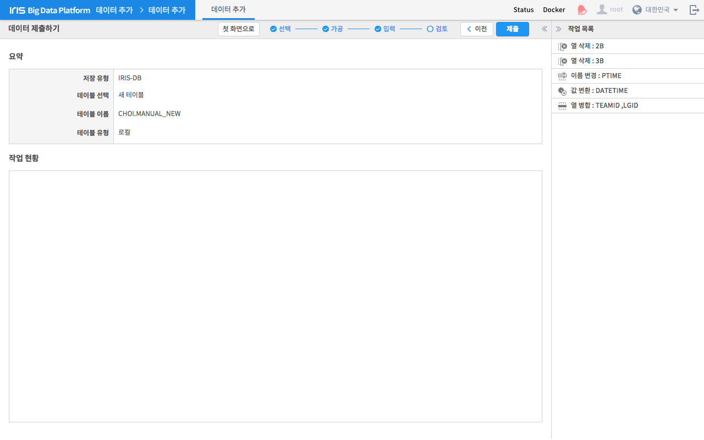
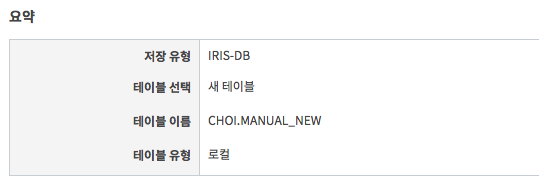
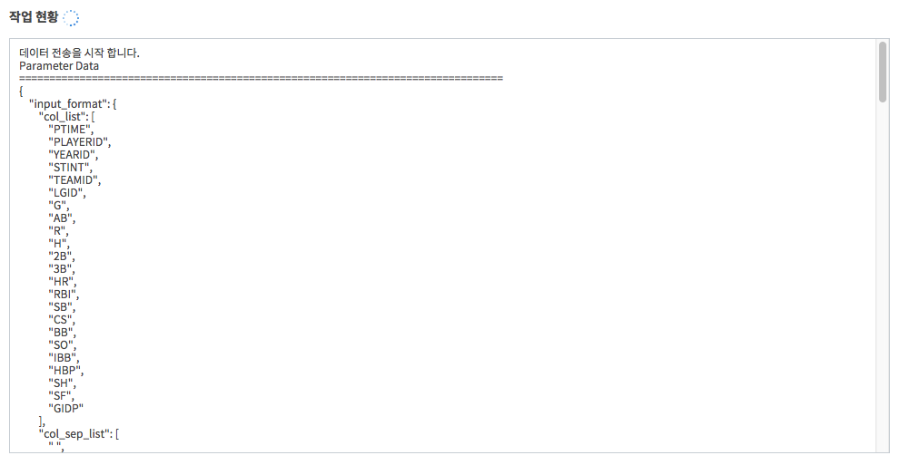

데이터 검토 및 제출¶
검토 및 제출에서는 앞선 단계에서 수행한 내용을 검토하고 서버를 통해 업로드 요청을 수행하고 그 결과를 보여줍니다.
번호 |
구분 |
설명 |
1 |
첫 화면으로 버튼 |
모든 작업을 초기화하고 첫 화면(데이터 선택하기)으로 돌아갑니다. |
2 |
제출 버튼 |
현재까지의 작업 내용으로 데이터베이스나 원격지에 데이터추가를 시작합니다. |
3 |
작업 목록 |
데이터 가공 화면에서 설정한 작업 목록을 보여줍니다. |
4 |
요약 |
데이터 입력 설정 화면에서 입력한 내용을 요약해서 보여줍니다. |
5 |
작업 현황 |
데이터 추가 현황을 로그 형태로 보여줍니다. |
요약¶
데이터 입력 설정 화면에서 입력한 내용을 요약해서 보여줍니다.
제출 및 작업 현황¶
작업 목록과 데이터 입력 설정을 서버에 제출하고 데이터 추가 작업 현황을 실시간으로 출력합니다. 화면 상단의 제출 버튼을 누르면 선택한 파일과 지금까지 입력한 작업 조건을 가지고 데이터 추가 작업을 시작합니다. 작업 현황은 하단 영역에서 로그 형태로 출력됩니다.
